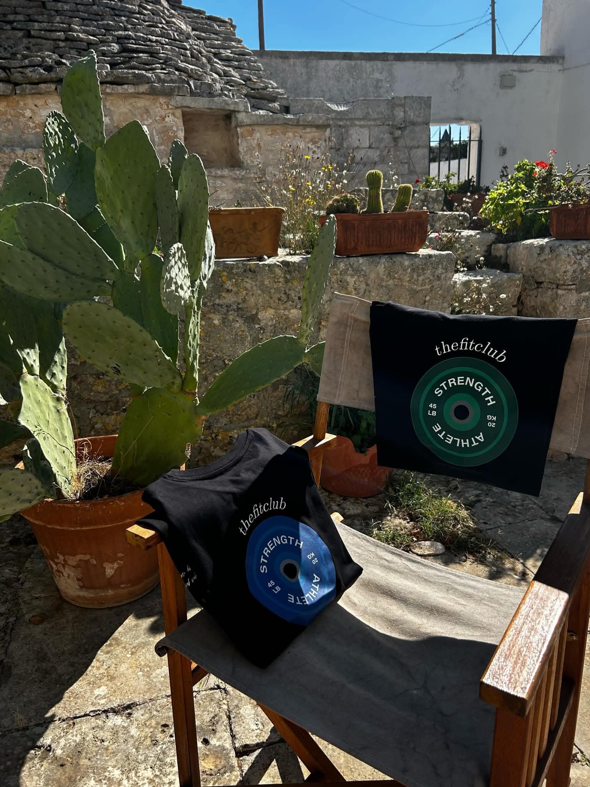
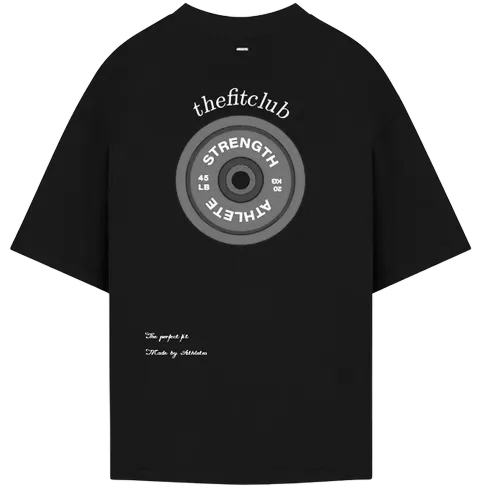
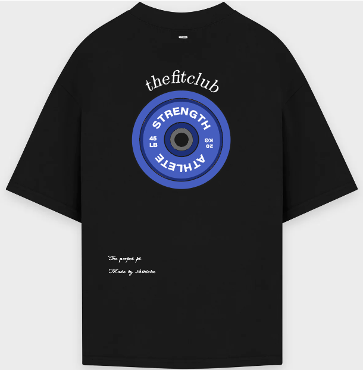
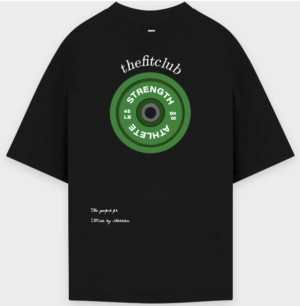
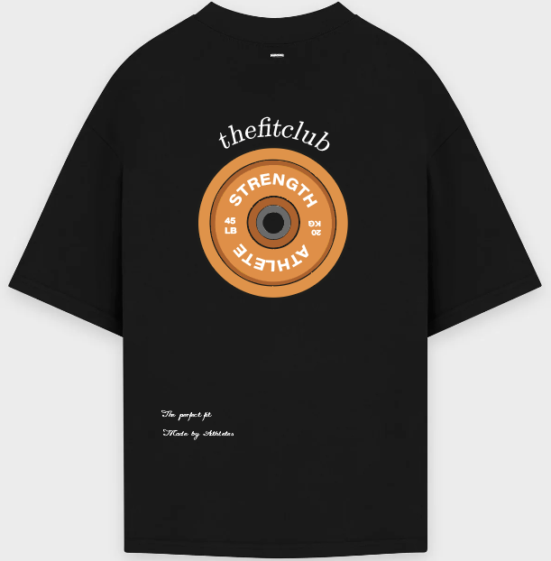
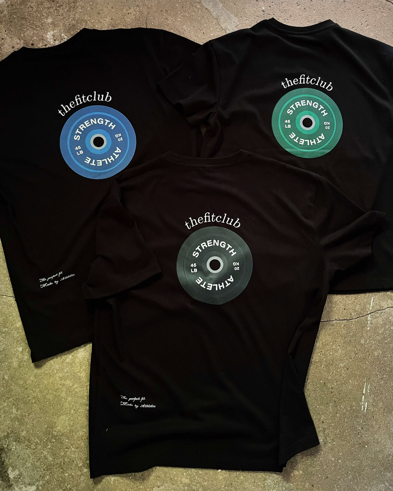
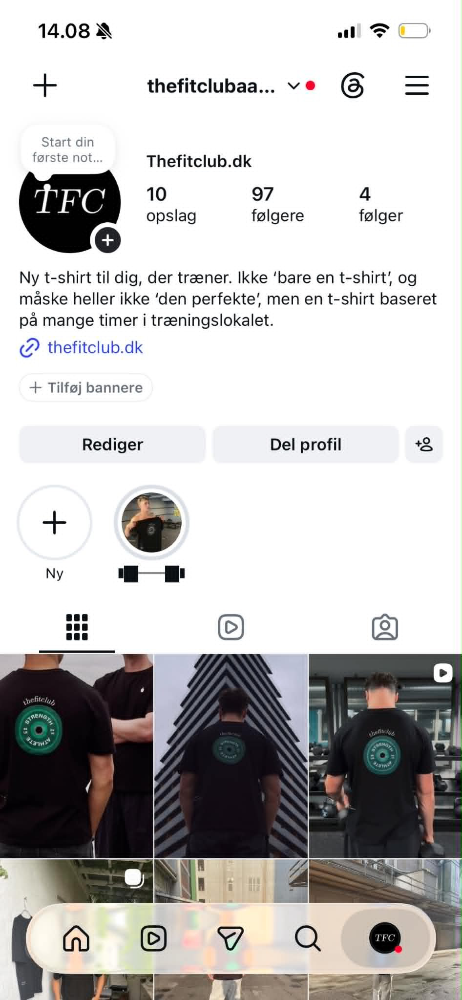
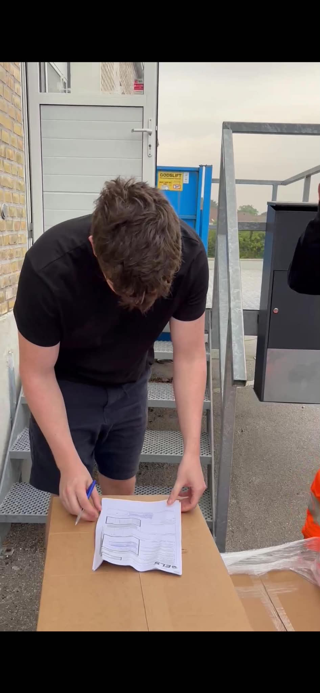

Tidligere eget brand · Projektcase
The Fit Club
Et fitness- og livsstilsbrand, som jeg skabte og drev fra idé til identitet, produkter, content og webshop.
Jeg er ikke længere ejer af brandet.
Originalt produktdesign
- Min rolle
- Ejer & kreativ ansvarlig
- Fokus
- Branding · Produkt · Digitalt
- Projekt
- Selvstændigt brand
- Status
- Tidligere ejer
01 · Brandet
Fra idé til et brand i brug.
Jeg byggede The Fit Club fra bunden og samlede min interesse for træning, grafisk design og digital kommunikation i én visuel identitet.

02 · Identiteten
Ét symbol. Flere udtryk.
Vægtskiven blev brandets visuelle omdrejningspunkt. De skiftende farver gjorde kollektionen varieret, mens typografi og komposition holdt udtrykket genkendeligt.




03 · Produkterne
Designet til at blive brugt.
Identiteten blev omsat til fysiske produkter med et enkelt fronttryk og et markant grafisk motiv på ryggen.

04 · Digitalt
Fra produkt til digital oplevelse.
Webshoppen og Instagram gav brandet et samlet digitalt udtryk og gjorde produkterne nemme at opdage, forstå og købe.


05 · Erfaringen
Mere end en designopgave.
Som ejer tog jeg ansvar for både det kreative og det praktiske: brandretning, produktdesign, webshop, indhold og samarbejder. Projektet lærte mig at skabe en rød tråd og føre beslutninger helt ud i virkeligheden.
- Visuel identitet og produktdesign
- Webshop og digital kommunikation
- Planlægning, content og samarbejder

Resultat
En idé blev til en hel identitet.
The Fit Club viser, at jeg både kan skabe det visuelle udtryk og holde overblik over de mange dele, der får et brand til at hænge sammen. Jeg ejer ikke længere brandet, men erfaringen tager jeg med videre i mit arbejde.